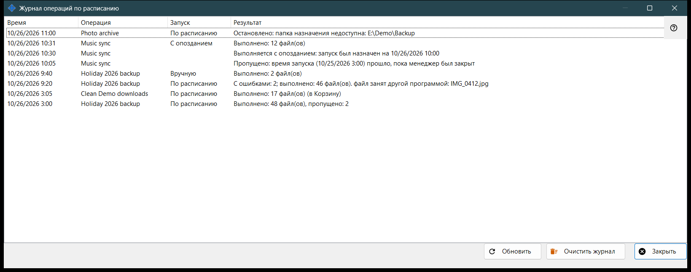
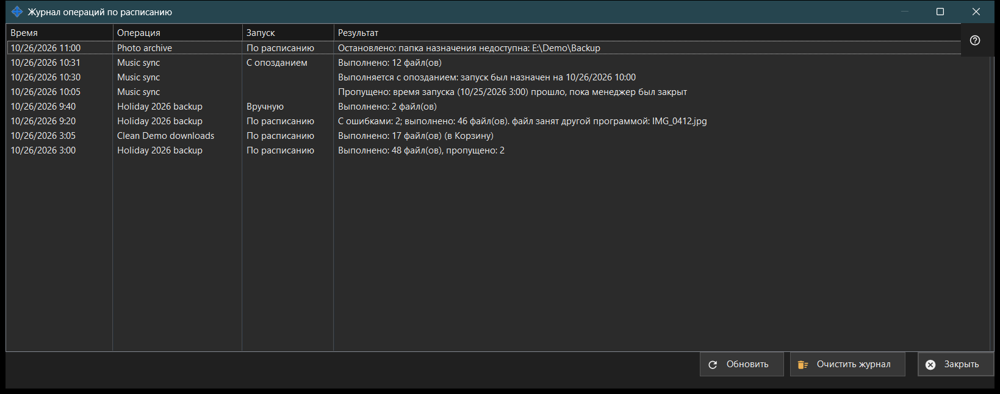

Журнал операций по расписанию
Назначение
Показывает последние запуски и заметки файловых операций по расписанию так, как они записаны в журнале. Файловые операции по расписанию устанавливаются вместе с Share Manager - это одна поставка, без отдельной загрузки и без службы Windows - и выполняются, пока Share Manager работает в вашем сеансе входа; им не нужны раздача папок, сервер, открытый порт и права администратора. Окно открывается кнопкой «Журнал..» в окне «Операции по расписанию» и на странице «Файловые операции по расписанию» в настройках Share Manager.


Порядок действий
- Прочитайте список: Время, Операция, Запуск и Результат.
- Расширьте окно, если результат длинный.
- «Обновить» читает журнал заново.
- «Очистить журнал» после подтверждения опустошает его.
- «Закрыть» закрывает окно.
Элементы окна
Колонки
Время, Операция (её название), Запуск и Результат. Запуск - По расписанию, Вручную, Запустить все или С опозданием; у заметки он пуст. Окно читает последние 200 записей журнала при открытии и по «Обновить» и само не обновляется.
Результаты запуска
«Выполнено: N файл(ов)», с «, пропущено: M», если часть файлов пропущена, и «(в Корзину)» для удалений. «С ошибками: N; выполнено: M файл(ов)» и первая причина: файл занят, нет доступа, файл не найден или изменился, на диске не хватило места. «Остановлено: ..», когда запуск прекращает преграда: недоступная папка, ресурс без сохранённого пароля или с неподтверждённым ключом сервера, устройство не в сети. «Не запущено: ..», если определение отклонено, а также «Пропущено: ..» и «Прервано». Журнал хранит коды, а не текст ошибок, поэтому формулировки соответствуют текущему языку. Когда одна из сторон - Google Drive, причиной может быть и отсутствие связи с Google Drive, нехватка места на нём, выход из него или файл больше предела пакета.
Заметки
Строка без значения в колонке «Запуск» - заметка: «Пропущено: время запуска (..) прошло, пока менеджер был закрыт», «Выполняется с опозданием: запуск был назначен на ..», «Отклонено: эта операция уже выполняется или ждёт очереди» и «Возобновлена: причина остановки устранена».
Очистить журнал
Спрашивает «Очистить журнал операций по расписанию? Сами операции и их расписание не изменятся.» с ответом «Нет» по умолчанию. Очищается только этот журнал; операции и их расписания остаются. Пока журнал пуст, кнопка отключена.
Настройки менеджера · Настройки общего доступа SFTP · Настройки сервера обмена